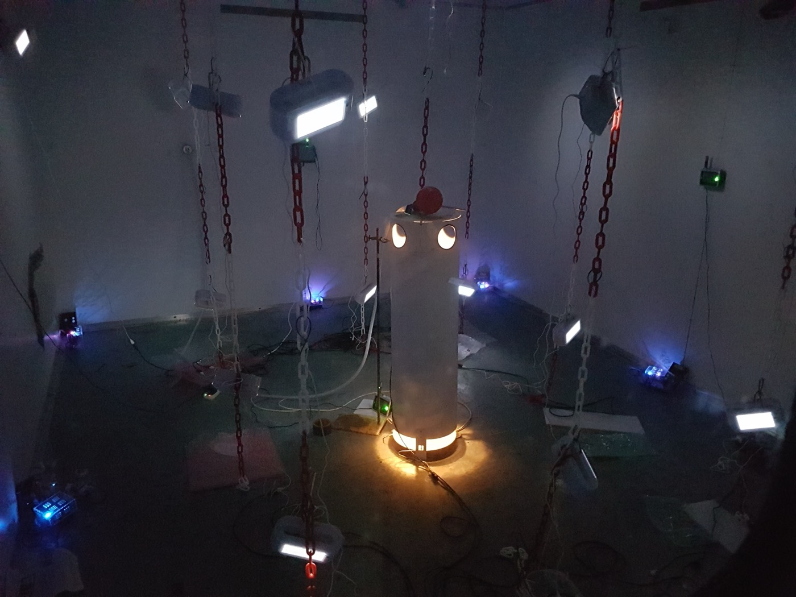
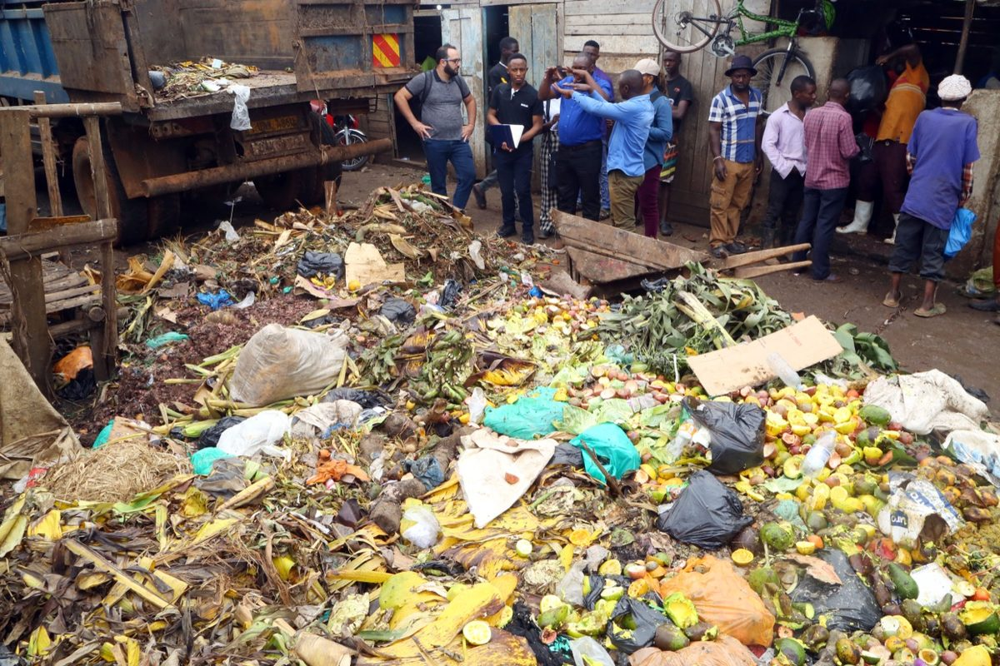
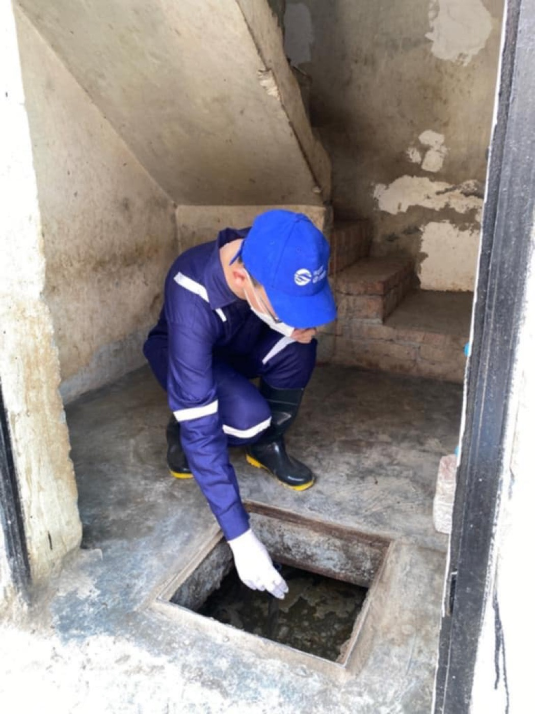
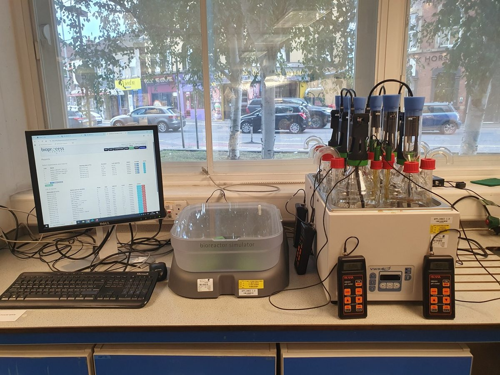
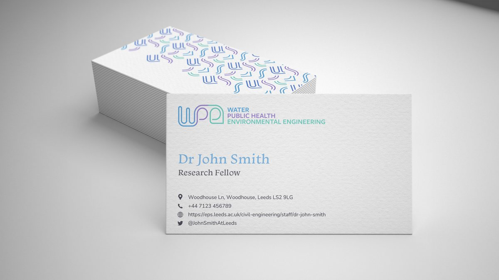

Country Overshoot Days 2026
Earth Overshoot Day fell on 30 July. Qatar would reach it on 4 February, Honduras on 27 November, and thirteen countries never. All 82, on one timeline.
Read MoreLatest research stories, awards, field dispatches, and insights from the WPE group

You cannot run a repeatable, controlled pathogen experiment on an occupied hospital ward. So we built a walk-in Class II room where you can — equipped with heated thermal manikins, a 3D sensor lattice, and real-time bioaerosol detection.
 By Associate Professor Marco-Felipe King
By Associate Professor Marco-Felipe King

Earth Overshoot Day fell on 30 July. Qatar would reach it on 4 February, Honduras on 27 November, and thirteen countries never. All 82, on one timeline.
Read MoreYou cannot run a controlled experiment on an occupied hospital ward. So we built a room where you can, and this is what we do in it.
Read More
Pit latrines were never designed for floods. Fieldwork in India and Uganda, and an hour of flooding simulated in CFD, show what comes out of one when the water rises.
Read More
Professor Cath Noakes OBE FREng has been awarded the Pettenkofer Award — the highest honour of the International Society of Indoor Air Quality and Climate (ISIAQ) — recognising her leadership in airborne infection science and building ventilation.
Read Impact Story
Following pilot trials in Kampala and rural Ugandan dairy cooperatives, the BioCool team has secured £1.75M from Innovate UK's Ayrton Challenge Energy programme to scale solar-assisted anaerobic digestion and Cooling-as-a-Service.
Read Spotlight
Five doctoral researchers designed the logo, the five colours, the typefaces, and the pattern that this website runs on. The assets, and the reasoning behind them.
Read More